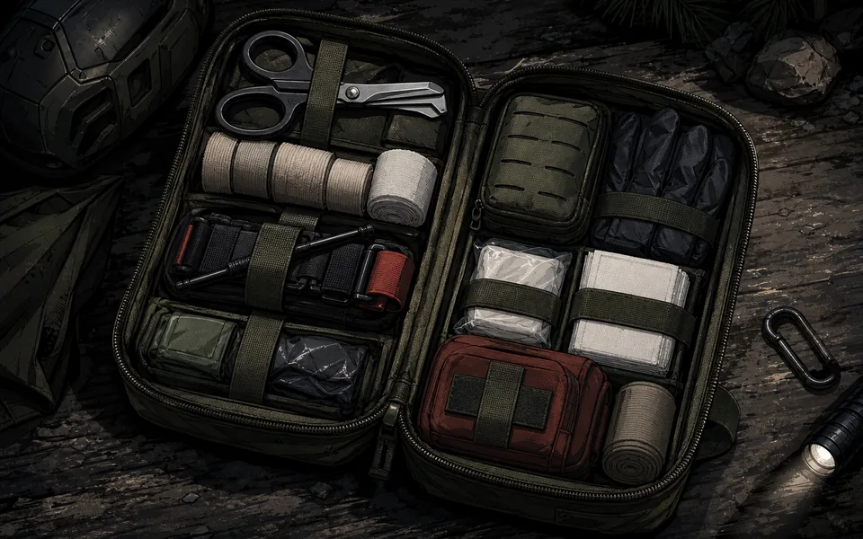
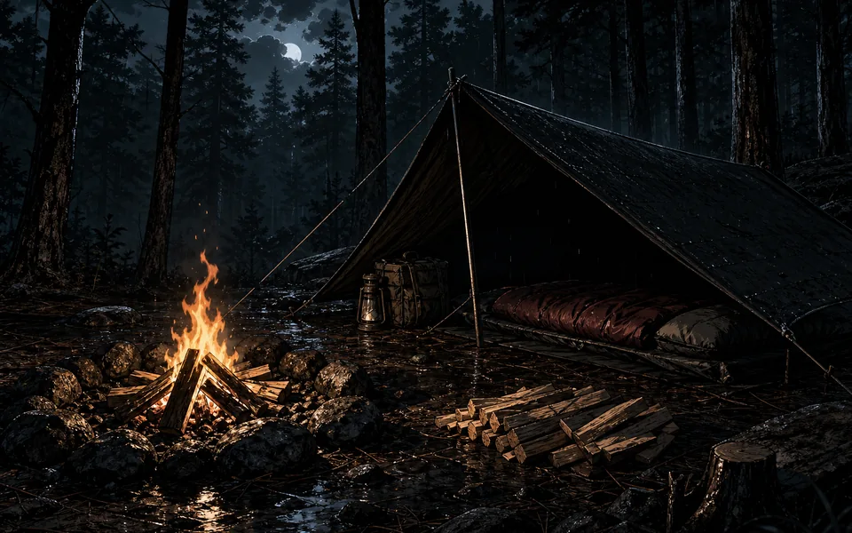
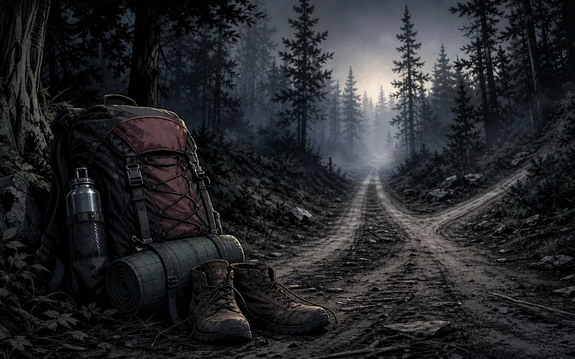
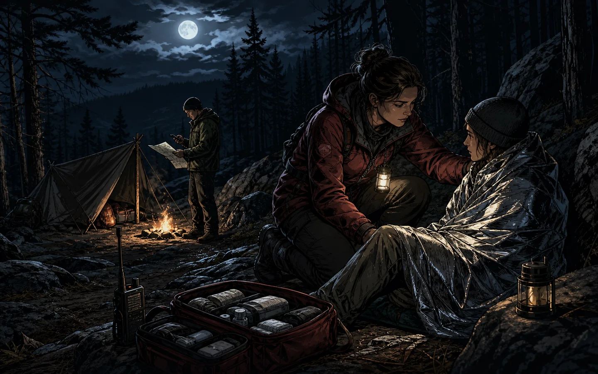

Build core skills
Start with water, fire, first-aid readiness, and cold-weather fundamentals.
Browse field guides →Gear, knowledge, and suppliers trusted by EMTs, firefighters, and explorers.
Start LearningYour one-stop hub for everything outdoors—from trauma kits to firecraft, from treasure-hunting tools to minimalist travel gear. We connect practical research, adaptive experience, and skills worth practicing.
Start with water, fire, first-aid readiness, and cold-weather fundamentals.
Browse field guides →Work through realistic problems using before, during, and after playbooks.
Choose a scenario →Compare gear notes, suppliers, limitations, and the evidence behind a recommendation.
Explore gear notes →
Top-rated first-aid, rescue, and field triage kits for wilderness medics and responders.
View Suppliers →
Reliable fire-starting gear and lightweight shelters for all climates and conditions.
Learn More →Metal detectors, mapping tech, and recovery gear for modern-day adventurers.
See Reviews →
Pack light, live free. Discover ultralight gear and minimalist setups for the open road.
Explore Tips →Real-world failures and research-informed mitigations—before, during, and after the event. EMT, treasure, firecraft, and hiking scenarios with step-by-step responses.

Essential ignition methods, safety practices, and gear setups for mastering the flame.
A professional breakdown of trauma tools, packaging strategy, and practical field use.
We collaborate only with certified suppliers and trusted outdoor brands. Some links on this site are affiliate links, meaning we may earn a small commission at no additional cost to you.
View All Suppliers